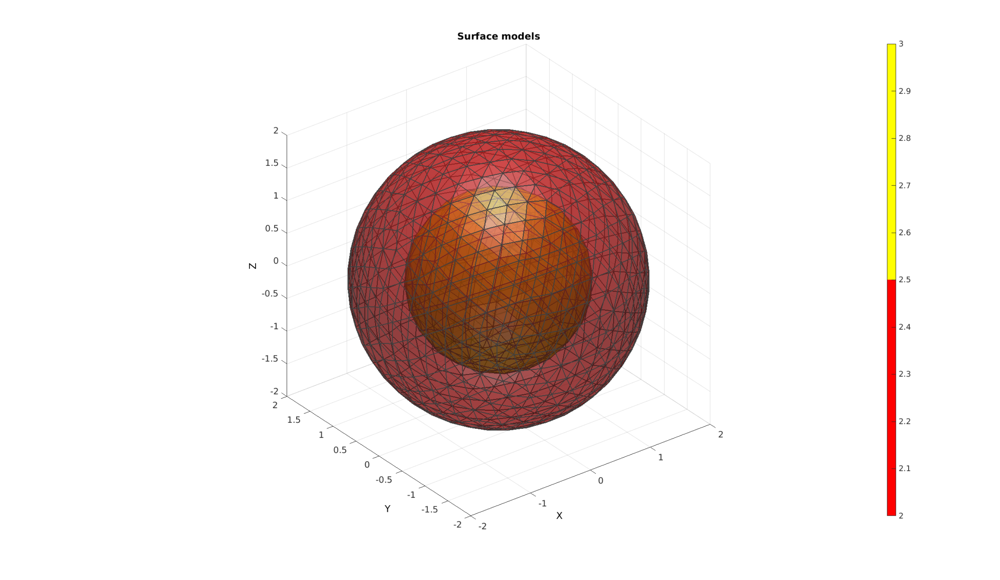
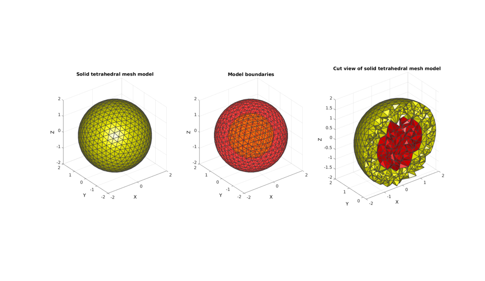
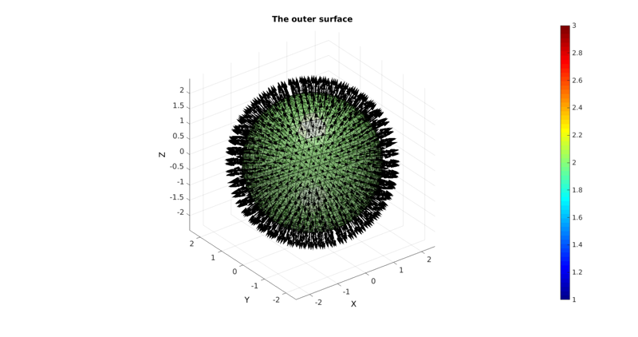
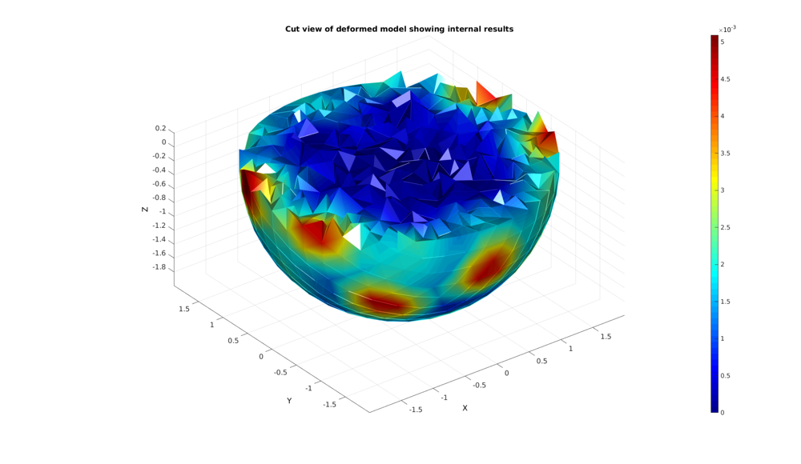
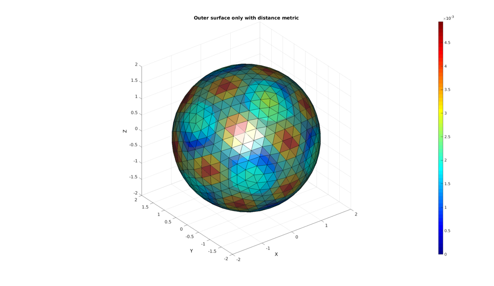
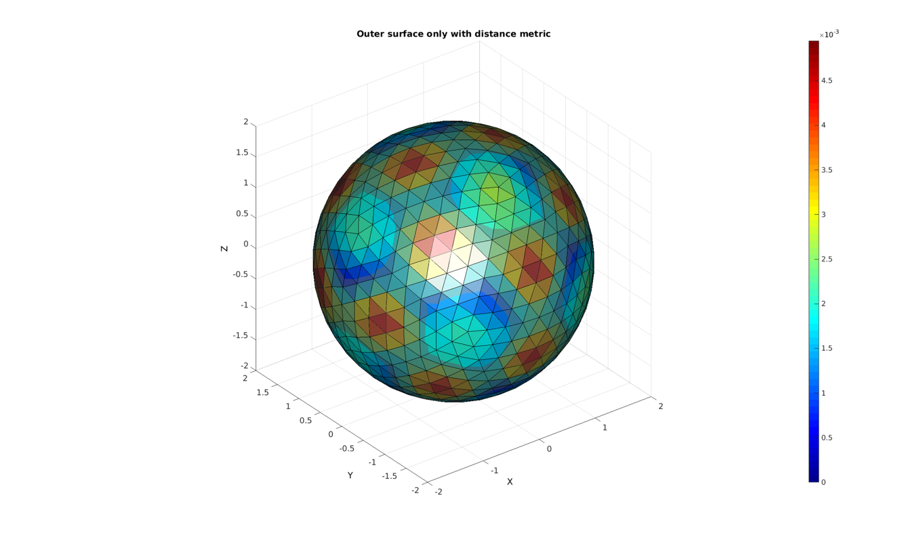

DEMO_create_run_import_FEBIO_spheres_traction
Below is a demonstration for:
- The use of TETgen for meshing based on surface geometry
- The specification of boundary conditions for FEBio including traction loading
- The exporting of .feb files
- Running an FEBio job with MATLAB
- Importing FEBio results into MATLAB
Contents
- Defining the surface models
- CREATING A SOLID TETRAHEDRAL MESH USING TETGEN
- DEFINE FACES FOR traction
- Define node numbers for rigid support
- CONSTRUCTING FEB MODEL
- SAVING .FEB FILE
- RUNNING FEBIO JOB
- IMPORTING NODAL DISPLACEMENT RESULTS
- CREATING NODE SET IN DEFORMED STATE
- EXAMPLE FOR VISUALIZATION OF MODEL OUTER SURFACE ONLY
clear; close all; clc;
Plot settings
fontSize=15; faceAlpha1=0.5; faceAlpha2=0.5; edgeColor=0.25*ones(1,3); edgeWidth=1.5; % path names defaultFolder = fileparts(fileparts(mfilename('fullpath'))); savePath=fullfile(defaultFolder,'data','temp');
Defining the surface models
The model will consists of two spheres one contained within the other defining two material regions. A stiff core and a soft outer later.
Control parameters for surface models
r1=2; %Outer sphere radius numRefine1=3; %Number of refinement steps from icosahedron faceBoundMarker1=2; %Face marker for outer sphere r2=1.25; %Inner sphere radius numRefine2=2; %Number of refinement steps from icosahedron faceBoundMarker2=3; %Face marker for inner sphere
Building the spheres using geoSphere function
[F1,V1,~]=geoSphere(numRefine1,r1); [F2,V2,~]=geoSphere(numRefine2,r2); % Merging the model geometries into a single set V=[V1;V2]; %Joining nodes F=[F1;F2+size(V1,1)]; %Joining faces faceBoundaryMarker=[faceBoundMarker1*ones(size(F1,1),1); faceBoundMarker2*ones(size(F2,1),1)]; %Create boundary markers for faces
Plotting surface models
hf=cFigure; title('Surface models','FontSize',fontSize); xlabel('X','FontSize',fontSize); ylabel('Y','FontSize',fontSize); zlabel('Z','FontSize',fontSize); hold on; patch('Faces',F,'Vertices',V,'FaceColor','flat','CData',faceBoundaryMarker,'FaceAlpha',faceAlpha1,'lineWidth',edgeWidth,'edgeColor',edgeColor); colormap(autumn(2)); colorbar; camlight headlight; set(gca,'FontSize',fontSize); view(3); axis tight; axis equal; grid on;
CREATING A SOLID TETRAHEDRAL MESH USING TETGEN
First region points need to be defined. These represent a list of arbitrary coordinates for points inside the regions. 1 point per region is specified. For the example here the points are easily specified. Sometimes a raytracing algorythm or the use of the triSurf2Im function is required to find interior points.
V_regions=[0 0 (r1+r2)/2;0 0 0;]; % Define region points
Next holes are defined. These are similar to regions. However holes, as the name suggests, are regions that a not meshed and are left empty. This model does not contain holes so the list is empty
V_holes=[]; %Define hole points
For each region the mesh density parameter can be specified regionA=[0.005 0.005]; % Regional mesh parameters
[edgeLengths]=patchEdgeLengths(F1,V1); edgeLengthsMean=mean(edgeLengths); meanProposedVolume=edgeLengthsMean^3./(6*sqrt(2)); %For regular tetrahedron region1_A=0.5.*meanProposedVolume; [edgeLengths]=patchEdgeLengths(F2,V2); edgeLengthsMean=mean(edgeLengths); meanProposedVolume=edgeLengthsMean^3./(6*sqrt(2)); %For regular tetrahedron region2_A=0.5.*meanProposedVolume; regionA=[region1_A region2_A];
CREATING THE model STRUCTURE. TetGen can mesh geometries from various mesh file formats. For the GIBBON toolbox .model files have been implemented. Below a structure is created that fully defines such as model file and the meshing settings for TetGen.
stringOpt='-pq1.2AaYQ'; modelNameEnd='tempModel'; modelName=fullfile(savePath,modelNameEnd); modelStruct.stringOpt=stringOpt; modelStruct.Faces=F; modelStruct.Nodes=V; modelStruct.holePoints=V_holes; modelStruct.faceBoundaryMarker=faceBoundaryMarker; %Face boundary markers modelStruct.regionPoints=V_regions; %region points modelStruct.regionA=regionA; modelStruct.minRegionMarker=2; %Minimum region marker modelStruct.modelName=modelName;
Mesh model using tetrahedral elements using tetGen (see: http://wias-berlin.de/software/tetgen/)
[meshOutput]=runTetGen(modelStruct); %Run tetGen
%%%%%%%%%%%%%%%%%%%%%%%%%%%%%%%%%%%%%%%%%%%%% --- TETGEN Tetrahedral meshing --- 11-Jul-2017 15:08:50 %%%%%%%%%%%%%%%%%%%%%%%%%%%%%%%%%%%%%%%%%%%%% --- Writing SMESH file --- 11-Jul-2017 15:08:50 ----> Adding node field ----> Adding facet field ----> Adding holes specification ----> Adding region specification --- Done --- 11-Jul-2017 15:08:50 --- Running TetGen to mesh input boundary--- 11-Jul-2017 15:08:50 Opening /mnt/data/MATLAB/GIT/GIBBON/lib_ext/tetGen/tempFiles/tempModel.smesh. --- Done --- 11-Jul-2017 15:08:50 %%%%%%%%%%%%%%%%%%%%%%%%%%%%%%%%%%%%%%%%%%%%% --- Importing TetGen files --- 11-Jul-2017 15:08:50 --- Done --- 11-Jul-2017 15:08:50
Accessing the model element and patch data
FT=meshOutput.faces; Fb=meshOutput.facesBoundary; Cb=meshOutput.boundaryMarker; VT=meshOutput.nodes; C=meshOutput.faceMaterialID; E=meshOutput.elements; elementMaterialIndices=meshOutput.elementMaterialID;
Plotting the meshed geometry
hf1=cFigure; subplot(1,3,1); title('Solid tetrahedral mesh model','FontSize',fontSize); xlabel('X','FontSize',fontSize); ylabel('Y','FontSize',fontSize); zlabel('Z','FontSize',fontSize); hold on; hps=patch('Faces',FT,'Vertices',VT,'FaceColor','flat','CData',C,'lineWidth',edgeWidth,'edgeColor',edgeColor); view(3); axis tight; axis equal; grid on; colormap(autumn); camlight headlight; set(gca,'FontSize',fontSize); subplot(1,3,2); title('Model boundaries','FontSize',fontSize); xlabel('X','FontSize',fontSize); ylabel('Y','FontSize',fontSize); zlabel('Z','FontSize',fontSize); hold on; hps=patch('Faces',Fb,'Vertices',VT,'FaceColor','flat','CData',Cb,'lineWidth',edgeWidth,'edgeColor',edgeColor,'FaceAlpha',faceAlpha1); view(3); axis tight; axis equal; grid on; colormap(autumn); set(gca,'FontSize',fontSize); drawnow; subplot(1,3,3); %Selecting half of the model to see interior Y=VT(:,2); YE=mean(Y(E),2); L=YE>mean(Y); [Fs,Cs]=element2patch(E(L,:),C(L),'tet4'); title('Cut view of solid tetrahedral mesh model','FontSize',fontSize); xlabel('X','FontSize',fontSize); ylabel('Y','FontSize',fontSize); zlabel('Z','FontSize',fontSize); hold on; hps=patch('Faces',Fs,'Vertices',VT,'FaceColor','flat','CData',Cs,'lineWidth',edgeWidth,'edgeColor',edgeColor); view(3); axis tight; axis equal; grid on; colormap(autumn); camlight headlight; set(gca,'FontSize',fontSize); drawnow;
DEFINE FACES FOR traction
For this example the outer sphere nodes are subjected to a traction
%Get outer surface (numbering may have altered due to tetgen behaviour so %redefined here) F1=Fb(Cb==2,:); F1=fliplr(F1);
hf=cFigure; title('The outer surface','FontSize',fontSize); xlabel('X','FontSize',fontSize); ylabel('Y','FontSize',fontSize); zlabel('Z','FontSize',fontSize); hold on; patch('Faces',F1,'Vertices',VT,'FaceColor','flat','CData',Cb(Cb==2),'FaceAlpha',0.5); [hp]=patchNormPlot(F1,VT,0.5); [N,Vn,Nv]=patchNormal(F1,VT); colormap jet; colorbar; camlight headlight; set(gca,'FontSize',fontSize); view(3); axis tight; axis equal; grid on; drawnow;
p=0.05;
[A]=patch_area(F1,VT); %Surface element areas
T=p.*A;
Define node numbers for rigid support
[minVal,minInd]=min(sum((VT-(ones(size(VT,1),1)*mean(VT,1))).^2,2)); %Find node closest to centre boundaryConditionNodeList=minInd; %Node closest to centre is constrained from moving
CONSTRUCTING FEB MODEL
FEB_struct.febio_spec.version='2.0'; FEB_struct.Module.Type='solid'; % Defining file names FEB_struct.run_filename=[modelName,'.feb']; %FEB file name FEB_struct.run_logname=[modelName,'.txt']; %FEBio log file name febMatID=elementMaterialIndices; febMatID(elementMaterialIndices==-2)=1; febMatID(elementMaterialIndices==-3)=2; %Creating FEB_struct FEB_struct.Geometry.Nodes=VT; FEB_struct.Geometry.Elements={E}; %The element sets FEB_struct.Geometry.ElementType={'tet4'}; %The element types FEB_struct.Geometry.ElementMat={febMatID}; FEB_struct.Geometry.ElementsPartName={'Sphere'}; % DEFINING MATERIALS k_factor=1000; %Material 1 c1=1e-3; k=c1*k_factor; FEB_struct.Materials{1}.Type='Mooney-Rivlin'; FEB_struct.Materials{1}.Properties={'c1','c2','k'}; FEB_struct.Materials{1}.Values={c1,0,k}; %Material 2 c1=2e-3; k=c1*k_factor; FEB_struct.Materials{2}.Type='Mooney-Rivlin'; FEB_struct.Materials{2}.Properties={'c1','c2','k'}; FEB_struct.Materials{2}.Values={c1,0,k}; %Defining surfaces FEB_struct.Geometry.Surface{1}.Set=F1; FEB_struct.Geometry.Surface{1}.Type='tri3'; FEB_struct.Geometry.Surface{1}.Name='traction_surface'; %Defining node sets FEB_struct.Geometry.NodeSet{1}.Set=boundaryConditionNodeList; FEB_struct.Geometry.NodeSet{1}.Name='boundaryConditionNodeList'; %Adding BC information FEB_struct.Boundary.Fix{1}.bc='x'; FEB_struct.Boundary.Fix{1}.SetName=FEB_struct.Geometry.NodeSet{1}.Name; FEB_struct.Boundary.Fix{2}.bc='y'; FEB_struct.Boundary.Fix{2}.SetName=FEB_struct.Geometry.NodeSet{1}.Name; FEB_struct.Boundary.Fix{3}.bc='z'; FEB_struct.Boundary.Fix{3}.SetName=FEB_struct.Geometry.NodeSet{1}.Name; %Adding load information for q=1:1:size(F1,1) FEB_struct.Loads.Surface_load{q}.Type='traction'; FEB_struct.Loads.Surface_load{q}.Set=F1(q,:); % FEB_struct.Loads.Surface_load{1}.SetName=FEB_struct.Geometry.Surface{1}.Name; FEB_struct.Loads.Surface_load{q}.lcPar='scale'; FEB_struct.Loads.Surface_load{q}.lcParValue=T(q); FEB_struct.Loads.Surface_load{q}.Properties={'traction'}; FEB_struct.Loads.Surface_load{q}.Values={-N(q,:)}; FEB_struct.Loads.Surface_load{q}.lc=1; end %Adding output requests FEB_struct.Output.VarTypes={'displacement','stress','relative volume'}; %Specify log file output run_node_output_name=[modelNameEnd,'_node_out.txt']; FEB_struct.run_output_names={run_node_output_name}; FEB_struct.output_types={'node_data'}; FEB_struct.data_types={'ux;uy;uz'}; %Control section FEB_struct.Control.AnalysisType='static'; FEB_struct.Control.Properties={'time_steps','step_size',... 'max_refs','max_ups',... 'dtol','etol','rtol','lstol'}; FEB_struct.Control.Values={10,0.1,... 25,0,... 0.001,0.01,0,0.9}; FEB_struct.Control.TimeStepperProperties={'dtmin','dtmax','max_retries','opt_iter','aggressiveness'}; FEB_struct.Control.TimeStepperValues={1e-5, 0.1, 5, 5, 1}; %Load curves FEB_struct.LoadData.LoadCurves.id=1; FEB_struct.LoadData.LoadCurves.type={'linear'}; FEB_struct.LoadData.LoadCurves.loadPoints={[0 0;1 1]};
SAVING .FEB FILE
FEB_struct.disp_opt=0; %Display waitbars
febStruct2febFile(FEB_struct);
%%%%%%%%%%%%%%%%%%%%%%%%%%%%%%%%%%%%%%%%%%%%% --- Writing FEBio XML object --- 11-Jul-2017 15:08:55 Adding Module level Adding Control level Adding Globals level Adding Material level Adding Geometry level ----> Adding node field ----> Adding element field ----> Adding tet4 element entries.... ----> Adding surface field ----> Adding NodeSet field Adding Boundary level ----> Defining fix type boundary conditions Adding Loads level ----> Defining surface loads Adding LoadData level ----> Defining load curves Adding Output level ----> Adding plotfile field ----> Adding logfile field Writing .feb file --- Done --- 11-Jul-2017 15:08:59
RUNNING FEBIO JOB
FEBioRunStruct.run_filename=FEB_struct.run_filename; FEBioRunStruct.run_logname=FEB_struct.run_logname; FEBioRunStruct.disp_on=1; FEBioRunStruct.disp_log_on=1; FEBioRunStruct.runMode='external';%'internal'; FEBioRunStruct.t_check=0.25; %Time for checking log file (dont set too small) FEBioRunStruct.maxtpi=1e99; %Max analysis time FEBioRunStruct.maxLogCheckTime=3; %Max log file checking time [runFlag]=runMonitorFEBio(FEBioRunStruct);%START FEBio NOW!!!!!!!!
%%%%%%%%%%%%%%%%%%%%%%%%%%%%%%%%%%%%%%%%%%%%% --- STARTING FEBIO JOB --- 11-Jul-2017 15:08:59 Waiting for log file... Proceeding to check log file...11-Jul-2017 15:08:59 ------- converged at time : 0.1 ------- converged at time : 0.2 ------- converged at time : 0.3 ------- converged at time : 0.4 ------- converged at time : 0.5 ------- converged at time : 0.6 ------- converged at time : 0.7 ------- converged at time : 0.8 ------- converged at time : 0.9 ------- converged at time : 1 --- Done --- 11-Jul-2017 15:09:08
if runFlag==1 %i.e. a succesful run
IMPORTING NODAL DISPLACEMENT RESULTS
Importing nodal displacements from a log file
[~, N_disp_mat,~]=importFEBio_logfile(fullfile(savePath,FEB_struct.run_output_names{1})); %Nodal displacements
DN=N_disp_mat(:,2:end,end); %Final nodal displacements
CREATING NODE SET IN DEFORMED STATE
VT_def=VT+DN;
Plotting the meshed geometry
%Selecting half of the model to see interior Z=VT(:,3); ZE=mean(Z(E),2); L=ZE<mean(Z); [Fs,~]=element2patch(E(L,:),[],'tet4'); Cs=sqrt(sum(DN.^2,2)); %Color towards displacement magnitude hf1=cFigure; title('Cut view of deformed model showing internal results','FontSize',fontSize); xlabel('X','FontSize',fontSize); ylabel('Y','FontSize',fontSize); zlabel('Z','FontSize',fontSize); hold on; hps=patch('Faces',Fs,'Vertices',VT_def,'FaceColor','flat','FaceVertexCData',Cs); view(3); axis tight; axis equal; grid on; colormap jet; colorbar; shading interp; camlight headlight; set(gca,'FontSize',fontSize); drawnow;
EXAMPLE FOR VISUALIZATION OF MODEL OUTER SURFACE ONLY
Visualizing the outer surface only is less memory intensive for large models
%Get free faces TR = triangulation(E,VT_def); %"Triangulation" representation F_free = freeBoundary(TR); %Free boundary triangles i.e. outer surface ind_V_free =unique(F_free(:)); %Indices of nodes at free boundary %Compute an example distance metric for visualization D=minDist(VT_def(ind_V_free,:),VT(ind_V_free,:)); %Disance metric is known for a list of points not suitable yet for colouring %faces C=zeros(size(VT,1),1); %Initialse vertex color list C(ind_V_free)=D; %Set color for point selection [CF]=vertexToFaceMeasure(F_free,C); %Convert vertex to face color measure hf1=cFigure; title('Outer surface only with distance metric','FontSize',fontSize); xlabel('X','FontSize',fontSize); ylabel('Y','FontSize',fontSize); zlabel('Z','FontSize',fontSize); hold on; hps=patch('Faces',F_free,'Vertices',VT_def,'FaceColor','flat','CData',CF); hps=patch('Faces',F_free,'Vertices',VT,'FaceColor',0.5.*ones(1,3),'FaceAlpha',0.5,'EdgeColor','none'); view(3); axis tight; axis equal; grid on; colormap jet; colorbar; caxis([0 max(CF(:))]); camlight headlight; set(gca,'FontSize',fontSize); drawnow;
end

GIBBON www.gibboncode.org
Kevin Mattheus Moerman, gibbon.toolbox@gmail.com